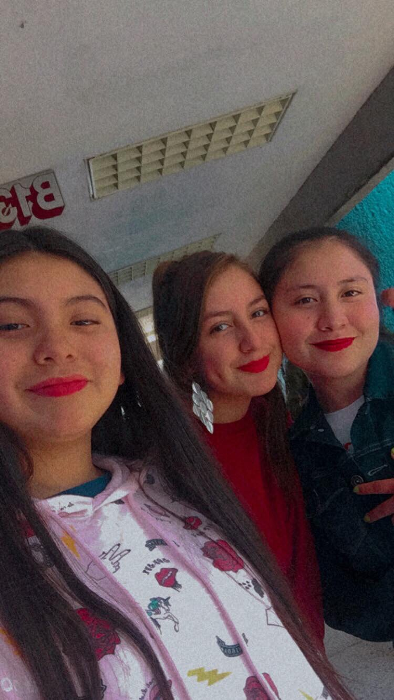
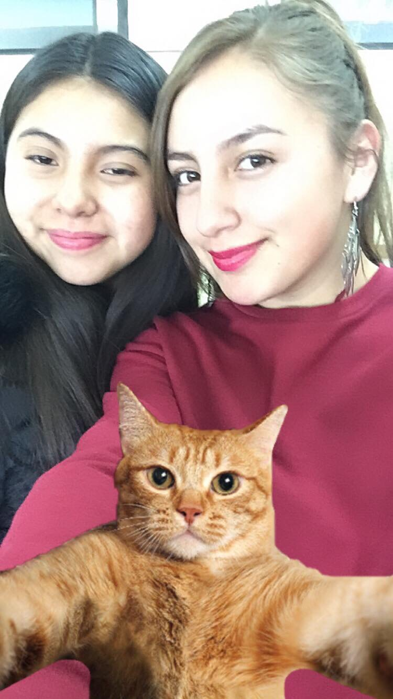

Mi experiencia en segundo semestre fue maravillosa, conocí personas muy importantes
en mi vida, así como aprendí cosas de ellos que me ayudaron a nutrir más mis conocimientos.


Aunque mi relación con mi grupo fue la misma, hice varios amigos de otros semestres, incluyendo
a los muchachos de servicio del salón de Computación.


Con respecto a esta asignatura, me encantó, era una de mis clases favoritas cuando aún asistía a clases
presenciales, la maestra Wendy es increíble, soy su fan, gracias a ella aprendí muchas cosas y más con su
forma de enseñar, ella creo un ambiente cómodo, alegre y de confianza para trabajar, en verdad lo ame.
Cuando empezó la cuarentena mi semestre dio un giro total, era un poco más dificil para mi entender varios
temas que veía en las clases virtuales, además de que por asuntos familiares me ausentaba algunos días,
sin embargo ha sido el mejor semestre de todos, es mejor de lo que podría desear, agradezco mucho a Dios
la oportunidad que me brindó de conocer a las personas que conocí en éste semestre, a mi maestra y a mis amigos.